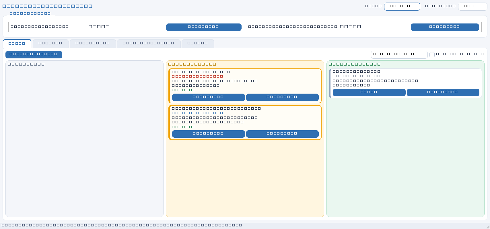
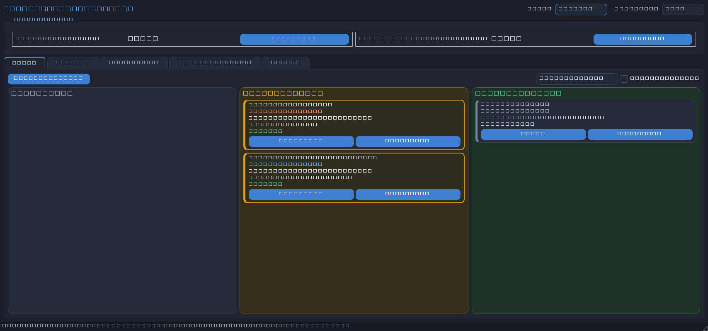

Локальное приложение для Windows: задачи на доске, живые таймеры, интервалы работы, профиль команды и отчёты за период. Перетащил карточку — таймер пошёл.


Всё, что нужно команде, чтобы видеть, на что уходит время
Колонки «Новая / В работе / Завершена». Перетаскивание карточки запускает и останавливает таймер — статус всегда выводится из интервалов.
Приоритет, видимость (личные/общие), суммарное и личное время, кто работает прямо сейчас и живой таймер.
Несколько задач одновременно, подтверждение завершения с длительностью, heartbeat-восстановление после выключения ПК.
Название команды, участники без паролей (добавить, переименовать, удалить) и статистика времени за период.
Отчёт по всем участникам за период и «Мои записи» — свои записи с фильтрами по датам и задаче.
Светлая и тёмная с переключателем в шапке. Палитра: синий, янтарь, зелёный и красный для высокого приоритета.
Три шага — и таймеры поехали
Распакуйте папку и запустите TimeTracker.exe — установщик и права администратора не нужны.
При первом запуске приложение попросит название команды и участников — дальше просто ведите задачи на доске.
git clone https://github.com/lazyness680-gif/TimeTracker.git cd TimeTracker pip install -r TimeTracker/requirements.txt python TimeTracker/main.py
Простой и надёжный
Открытый исходный код на GitHub: задачи, таймеры, отчёты и две темы — без регистрации и авторизации.